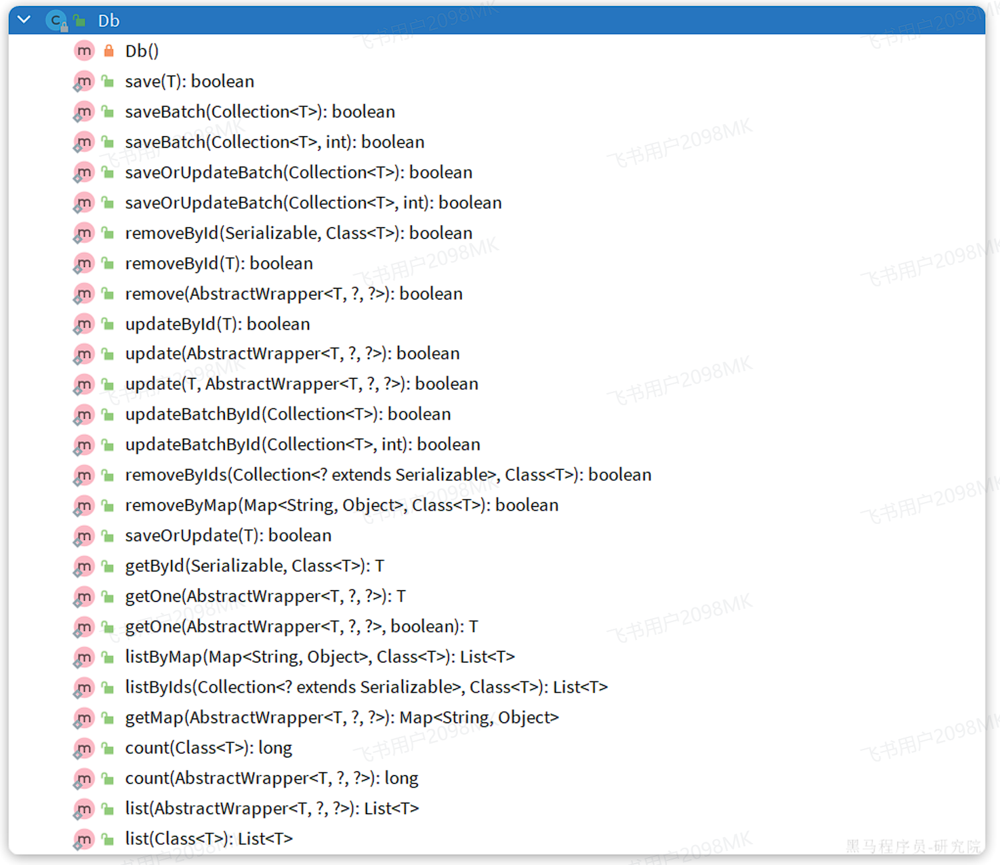
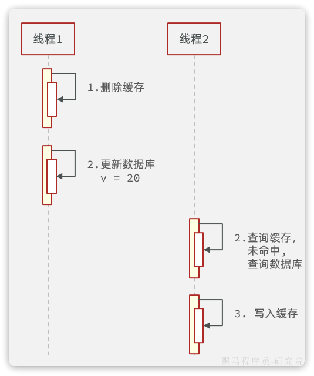
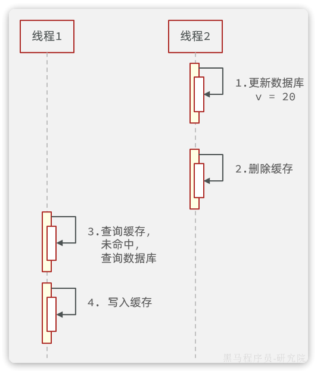
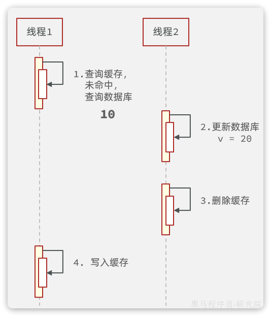
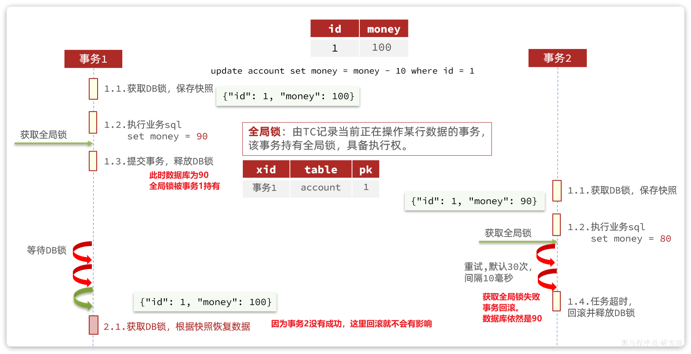
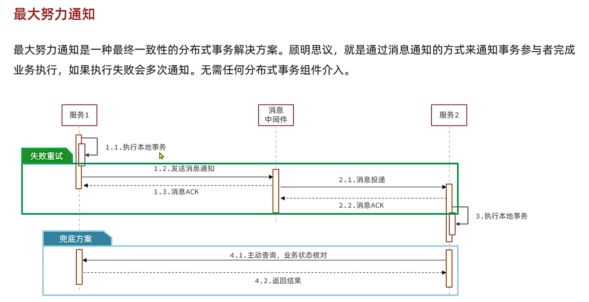
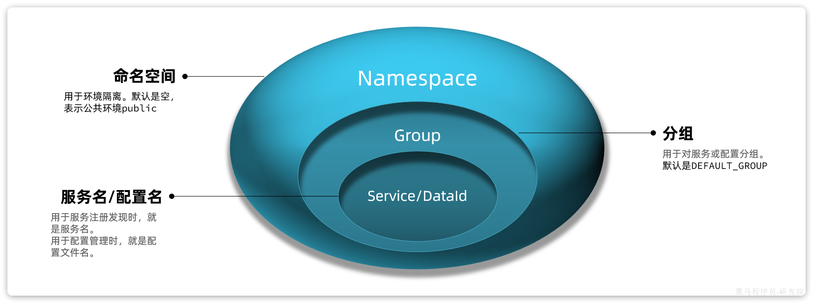

SpringCloud
MyBatis-Plus¶
快速入门¶
- 引入依赖(maven)：
<dependency>
<groupId>com.baomidou</groupId>
<artifactId>mybatis-plus-spring-boot3-starter</artifactId>
<version>3.5.9</version>
</dependency>
<!-- springBoot3依赖 -->
[!TIP]
以上为Spring Boot3.x.x版本依赖，3.x.x以下版本略有不同
- 自定义的Mapper继承MybatisPlus提供的BaseMapper接口：
public interface UserMapper extends BaseMapper<User> {}
常见注解¶
[!TIP]
MyBatisPlus通过扫描实体类，并基于反射获取实体类信息作为数据库表信息。
约定大于配置：
-
类名驼峰转下划线作为表名
-
名为id的字段作为主键
-
变量名驼峰转下划线作为表的字段名
MybatisPlus中比较常用的几个注解如下(主要用于不满足约定的情况)：
-
@TableName：用来指定表名 -
@TableId：用来指定表中的主键字段信息 -
@TableField：用来指定表中的普通字段信息
@TableName("user")
public class User {
/**
* 用户id
*/
@TableId(value = "id", type = IdType.AUTO)
private Long id;
/**
* 用户名
*/
@TableField("username")
private String username;
}
IdType枚举（建议指定）：
-
AUTO：数据库自增长 -
INPUT：通过set方法自行输入 -
ASSIGN_ID：分配 ID，接口IdentifierGenerator的方法nextId来生成id，默认实现类为DefaultIdentifierGenerator雪花算法
使用@TableField的常见场景：
-
成员变量名与数据库字段名不一致
-
成员变量名以is开头，且是布尔值
-
成员变量名与数据库关键字冲突 如@TableField("`order`") 使用反引号括起来
-
成员变量不是数据库字段
常用配置¶
mybatis-plus:
type-aliases-package: com.ysh.entity #别名扫描包
mapper-locations: classpath:mapper/**/*.xml #mapper扫描路径
configuration:
map-underscore-to-camel-case: true #开启驼峰命名规则
cache-enabled: false #关闭Mybatis二级缓存
global-config:
db-config:
id-type: assign_id #主键类型为雪花算法（全局配置）注解配置高于全局配置
update-strategy: not_null #更新策略:只更新不为null的值
具体可参考官方文档：使用配置 | MyBatis-Plus(baomidou.com)
核心功能¶
条件构造器¶

需求：
- 查询出名字中带o的，存款大于等于1000元的人的id、username、info、balance字段
# 原始SQL语句
SELECT id,username,info,balance
FROM user
WHERE username LIKE ? AND balance >= ?
// 构建查询条件
QueryWrapper<User> wrapper = new QueryWrapper<User>()
.select("id", "username", "info", "balance")
.like("username", "o")
.ge("balance", 1000);
// 执行查询
userMapper.selectList(wrapper);
- 更新用户名为jack的用户的余额为2000
UPDATE user
SET balance = 2000
WHERE (username = "jack")
User user = new User();
user.setBalance(2000);
QueryWrapper<User> wrapper = new QueryWrapper<User>()
.eq("username", "jack");
userMapper.update(user, wrapper);
- 更新id为1,2,4的用户的余额，扣200
UPDATE user
SET balance = balance - 200
WHERE id in (1, 2, 4)
List<Long> ids = List.of(1L, 2L, 4L);
UpdateWrapper<User> wrapper = new UpdateWrapper<User>()
.setSql("balance = balance - 200")
.in("id", ids);
userMapper.update(null,wrapper);
- LambdaWrapper
LambdaQueryWrapper<User> wrapper = new LambdaQueryWrapper<User>()
.select(User::getId, User::getUsername, User::getInfo, User::getBalance)
.like(User::getUsername, "o")
.ge(User::getBalance, 1000);
userMapper.selectList(wrapper).forEach(System.out::println);
总结：
条件构造器的用法：
-
QueryWrapper和LambdaQueryWrapper通常用来构建select、delete、update的where条件部分
-
UpdateWrapper和LambdaUpdateWrapper通常只有在set语句比较特殊才使用
-
尽量使用LambdaQueryWrapper和LambdaUpdateWrapper，避免硬编码
自定义SQl¶
我们可以利用MyBatisPlus的Wrapper来构建复杂的Where条件，然后自己定义SQL语句中剩下的部分。
需求：将id在指定范围的用户（例如1、2、4 ）的余额扣减指定值
- 基于Wrapper构建where条件
List<Long> ids = List.of(1L, 2L, 4L);
int amount = 200;
// 1.构建条件
LambdaQueryWrapper<User> wrapper = new LambdaQueryWrapper<User>().in(User::getId, ids);
//2.自定义SQL方法调用
userMapper.updateBalanceByIds(wrapper, amount);
- 在mapper方法参数中用Param注解声明wrapper变量名称，必须是ew
void updateBalanceByIds(@Param("ew") LambdaQueryWrapper<User> wrapper, @Param("amount") int amount);
[!CAUTION]
Wrapper参数必须指定为“ew”
- 自定义SQL，并使用Wrapper条件
<update id="updateBalanceByIds">
UPDATE tb_user SET balance = balance - #{amount} ${ew.customSqlSegment}
</update>
Service接口¶
基本使用¶

使用步骤：
- 自定义Service接口继承IService接口
public interface IUserService extends IService<User> {
}
- 自定义Service实现类，实现自定义接口并继承ServiceImpl类
@Service
public class UserServiceImpl extends ServiceImpl<UserMapper, User> implements IUserService {
}
Lambda¶
IService中还提供了Lambda功能来简化我们的复杂查询及更新功能。
案例一：实现一个根据复杂条件查询用户的接口，查询条件如下：
-
name：用户名关键字，可以为空
-
status：用户状态，可以为空
-
minBalance：最小余额，可以为空
-
maxBalance：最大余额，可以为空
可以理解成一个用户的后台管理界面，管理员可以自己选择条件来筛选用户，因此上述条件不一定存在，需要做判断。
List<User> users = userService.lambdaQuery()
.like(username != null, User::getUsername, username)
.eq(status != null, User::getStatus, status)
.ge(minBalance != null, User::getBalance, minBalance)
.le(maxBalance != null, User::getBalance, maxBalance)
.list();
在组织查询条件的时候，我们加入了
username != null这样的参数，意思就是当条件成立时才会添加这个查询条件
可以发现lambdaQuery方法中除了可以构建条件，还需要在链式编程的最后添加一个list()，这是在告诉MP我们的调用结果需要是一个list集合。这里不仅可以用list()，可选的方法有：
-
.one()：最多1个结果 -
.list()：返回集合结果 -
.count()：返回计数结果
MybatisPlus会根据链式编程的最后一个方法来判断最终的返回结果。
根据id修改用户余额
lambdaUpdate()
.set(User::getBalance, remainBalance) // 更新余额
.set(remainBalance == 0, User::getStatus, 2) // 动态判断，是否更新status
.eq(User::getId, id)
.eq(User::getBalance, user.getBalance()) // 乐观锁，解决并发问题
.update();
批量新增¶
测试逐条插入数据，效率极低。
然后再试试MybatisPlus的批处理：
@Test
void testSaveBatch() {
// 准备10万条数据
List<User> list = new ArrayList<>(1000);
long b = System.currentTimeMillis();
for (int i = 1; i <= 100000; i++) {
list.add(buildUser(i));
// 每1000条批量插入一次
if (i % 1000 == 0) {
userService.saveBatch(list);
list.clear();
}
}
long e = System.currentTimeMillis();
System.out.println("耗时：" + (e - b));
}
[!TIP]
比逐条新增效率提高了10倍左右
MybatisPlus的批处理是基于PrepareStatement的预编译模式，然后批量提交，最终在数据库执行时还是会有多条insert语句，逐条插入数据。SQL类似这样：
Preparing: INSERT INTO user ( username, password, phone, info, balance, create_time, update_time ) VALUES ( ?, ?, ?, ?, ?, ?, ? )
Parameters: user_1, 123, 18688190001, "", 2000, 2023-07-01, 2023-07-01
Parameters: user_2, 123, 18688190002, "", 2000, 2023-07-01, 2023-07-01
Parameters: user_3, 123, 18688190003, "", 2000, 2023-07-01, 2023-07-01
而如果想要得到最佳性能，最好是将多条SQL合并为一条，像这样：
INSERT INTO user ( username, password, phone, info, balance, create_time, update_time )
VALUES
(user_1, 123, 18688190001, "", 2000, 2023-07-01, 2023-07-01),
(user_2, 123, 18688190002, "", 2000, 2023-07-01, 2023-07-01),
(user_3, 123, 18688190003, "", 2000, 2023-07-01, 2023-07-01),
(user_4, 123, 18688190004, "", 2000, 2023-07-01, 2023-07-01);
解决方案：
MySQL的客户端连接参数中有这样的一个参数：rewriteBatchedStatements。顾名思义，就是重写批处理的statement语句。
[!TIP]
这个参数的默认值是false，我们需要修改连接参数，将其配置为true
修改项目中的application.yml文件，在jdbc的url后面添加参数&rewriteBatchedStatements=true
spring:
datasource:
url: jdbc:mysql://8.138.186.154:3306/mp?rewriteBatchedStatements=true&useUnicode=true&characterEncoding=UTF-8&autoReconnect=true&serverTimezone=Asia/Shanghai
driver-class-name: com.mysql.cj.jdbc.Driver
username: root
password: 123456
扩展功能¶
代码生成¶
在使用MybatisPlus以后，基础的Mapper、Service、PO代码相对固定，重复编写也比较麻烦。因此MybatisPlus官方提供了代码生成器根据数据库表结构生成PO、Mapper、Service等相关代码。只不过代码生成器同样要编码使用，也很麻烦。
推荐使用一款MybatisPlus的插件(IDEA插件)，它可以基于图形化界面完成MybatisPlus的代码生成，非常简单。

静态工具¶
有的时候Service之间也会相互调用，为了避免出现循环依赖问题，MybatisPlus提供一个静态工具类：Db，其中的一些静态方法与IService中方法签名基本一致，也可以帮助我们实现CRUD功能：

示例：
@Test
void testDbGet() {
User user = Db.getById(1L, User.class);
System.out.println(user);
}
@Test
void testDbList() {
// 利用Db实现复杂条件查询
List<User> list = Db.lambdaQuery(User.class)
.like(User::getUsername, "o")
.ge(User::getBalance, 1000)
.list();
list.forEach(System.out::println);
}
@Test
void testDbUpdate() {
Db.lambdaUpdate(User.class)
.set(User::getBalance, 2000)
.eq(User::getUsername, "Rose");
}
逻辑删除¶
对于一些比较重要的数据，我们往往会采用逻辑删除的方案，即：
-
在表中添加一个字段标记数据是否被删除
-
当删除数据时把标记置为true
-
查询时过滤掉标记为true的数据
[!WARNING]
一旦采用了逻辑删除，所有的查询和删除逻辑都要跟着变化，非常麻烦。
为了解决这个问题，MybatisPlus就添加了对逻辑删除的支持。
[!CAUTION]
注意，只有MybatisPlus生成的SQL语句才支持自动的逻辑删除，自定义SQL需要自己手动处理逻辑删除。
例如，我们给address表添加一个逻辑删除字段：
alter table address add deleted bit default b'0' null comment '逻辑删除';
然后给Address实体添加deleted字段(Boolean类型)：
接下来，我们要在application.yml中配置逻辑删除字段：
mybatis-plus:
global-config:
db-config:
logic-delete-field: deleted # 全局逻辑删除的实体字段名(since 3.3.0,配置后可以忽略不配置步骤2)
logic-delete-value: 1 # 逻辑已删除值(默认为 1)
logic-not-delete-value: 0 # 逻辑未删除值(默认为 0)
执行删除方法，与普通删除一模一样，但是底层的SQL逻辑变了：
[!TIP]
查询也会自动筛选逻辑删除数据
综上， 开启了逻辑删除功能以后，我们就可以像普通删除一样做CRUD，基本不用考虑代码逻辑问题。还是非常方便的。
[!CAUTION]
注意：逻辑删除本身也有自己的问题，比如：
会导致数据库表垃圾数据越来越多，从而影响查询效率
SQL中全都需要对逻辑删除字段做判断，影响查询效率
因此，不太推荐采用逻辑删除功能，如果数据不能删除，可以采用把数据迁移到其它表的办法。
通用枚举¶
User类中有一个用户状态字段：
private Integer status;//使用状态（1正常 2冻结）
像这种字段我们一般会定义一个枚举，做业务判断的时候就可以直接基于枚举做比较。但是我们数据库采用的是int类型，对应的PO也是Integer。因此业务操作时必须手动把枚举与Integer转换，非常麻烦。
因此，MybatisPlus提供了一个处理枚举的类型转换器，可以帮我们把枚举类型与数据库类型自动转换。
定义枚举类：
[!TIP]
要让
MybatisPlus处理枚举与数据库类型自动转换，我们必须告诉MybatisPlus，枚举中的哪个字段的值作为数据库值。MybatisPlus提供了@EnumValue注解来标记枚举属性
import com.baomidou.mybatisplus.annotation.EnumValue;
import lombok.Getter;
@Getter
public enum UserStatus {
NORMAL(1, "正常"),
FREEZE(2, "冻结");
@EnumValue
private final int value;
private final String desc;
UserStatus(int value, String desc) {
this.value = value;
this.desc = desc;
}
}
然后把User类中的status字段改为UserStatus 类型
配置枚举处理器,在application.yaml文件中添加配置：
mybatis-plus:
configuration:
default-enum-type-handler: com.baomidou.mybatisplus.core.handlers.MybatisEnumTypeHandler
同时，为了使页面查询结果也是枚举格式，我们需要修改UserVO中的status属性
并且，在UserStatus枚举中通过@JsonValue注解标记JSON序列化时展示的字段
JSON类型处理器¶
数据库的user表中有一个info字段，是JSON类型
而目前User实体类中却是String类型
这样一来，我们要读取info中的属性时就非常不方便。如果要方便获取，info的类型最好是一个Map或者实体类。
而一旦我们把info改为对象类型，就需要在写入数据库时手动转为String，再读取数据库时，手动转换为对象，这会非常麻烦。
因此MybatisPlus提供了很多特殊类型字段的类型处理器，解决特殊字段类型与数据库类型转换的问题。例如处理JSON就可以使用JacksonTypeHandler处理器。
使用步骤：
- 定义实体
首先，我们定义一个单独实体类来与info字段的属性匹配
public class UserInfo{
//...
}
- 使用类型处理器
接下来，将User类的info字段修改为UserInfo类型，并声明类型处理器
@TableField(typeHandler = JacksonTypeHandler.class)
private UserInfo info;
插件功能¶
MybatisPlus提供了很多的插件功能，进一步拓展其功能。目前已有的插件有：
-
PaginationInnerInterceptor：自动分页 -
TenantLineInnerInterceptor：多租户 -
DynamicTableNameInnerInterceptor：动态表名 -
OptimisticLockerInnerInterceptor：乐观锁 -
IllegalSQLInnerInterceptor：sql 性能规范 -
BlockAttackInnerInterceptor：防止全表更新与删除
分页插件¶
在项目中新建一个配置类
@Configuration
public class MybatisConfig {
@Bean
public MybatisPlusInterceptor mybatisPlusInterceptor() {
// 初始化核心插件
MybatisPlusInterceptor interceptor = new MybatisPlusInterceptor();
// 添加分页插件
interceptor.addInnerInterceptor(new PaginationInnerInterceptor(DbType.MYSQL));
return interceptor;
}
}
编写一个分页查询的测试
@Test
void testPageQuery() {
// 1.分页查询，new Page()的两个参数分别是：页码、每页大小
Page<User> p = userService.page(new Page<>(2, 2));
// 2.总条数
System.out.println("total = " + p.getTotal());
// 3.总页数
System.out.println("pages = " + p.getPages());
// 4.数据
List<User> records = p.getRecords();
records.forEach(System.out::println);
}
这里用到了分页参数，Page，即可以支持分页参数，也可以支持排序参数。常见的API如下：
int pageNo = 1, pageSize = 5;
// 分页参数
Page<User> page = Page.of(pageNo, pageSize);
// 排序参数, 通过OrderItem来指定
page.addOrder(new OrderItem("balance", false));
userService.page(page);
通用分页实体¶
现在要实现一个用户分页查询的接口，接口规范如下：
| 参数 | 说明 |
|---|---|
| 请求方式 | GET |
| 请求路径 | /users/page |
| 请求参数 | { "pageNo": 1, "pageSize": 5, "sortBy": "balance", "isAsc": false, "name": "o", "status": 1} |
| 返回值 | { "total": 100006, "pages": 50003, "list": [ { "id": 1685100878975279298, "username": "user_9****", "info": { "age": 24, "intro": "英文老师", "gender": "female" }, "status": "正常", "balance": 2000 } ]} |
| 特殊说明 | 如果排序字段为空，默认按照更新时间排序 排序字段不为空，则按照排序字段排序 |
这里需要定义3个实体：
-
UserQuery：分页查询条件的实体，包含分页、排序参数、过滤条件 -
PageDTO：分页结果实体，包含总条数、总页数、当前页数据 -
UserVO：用户页面视图实体
PageQuery是前端提交的查询参数，一般包含四个属性：
-
pageNo：页码 -
pageSize：每页数据条数 -
sortBy：排序字段 -
isAsc：是否升序
@Data
@ApiModel(description = "分页查询实体")
public class PageQuery {
@ApiModelProperty("页码")
private Long pageNo;
@ApiModelProperty("页码")
private Long pageSize;
@ApiModelProperty("排序字段")
private String sortBy;
@ApiModelProperty("是否升序")
private Boolean isAsc;
}
其他类可继承该类实现扩展
PageDTO
@Data
public class PageDTO<T> {
private Long total;
private Long pages;
private List<T> list;
}
测试代码：
@Override
public PageDTO<UserVO> queryUsersPage(PageQuery query) {
// 1.构建条件
// 1.1.分页条件
Page<User> page = Page.of(query.getPageNo(), query.getPageSize());
// 1.2.排序条件
if (query.getSortBy() != null) {
page.addOrder(new OrderItem(query.getSortBy(), query.getIsAsc()));
}else{
// 默认按照更新时间排序
page.addOrder(new OrderItem("update_time", false));
}
// 2.查询
this.page(page);
// 3.数据非空校验
List<User> records = page.getRecords();
if (records == null || records.size() <= 0) {
// 无数据，返回空结果
return new PageDTO<>(page.getTotal(), page.getPages(), Collections.emptyList());
}
// 4.有数据，转换
List<UserVO> list = BeanUtil.copyToList(records, UserVO.class);
// 5.封装返回
return new PageDTO<UserVO>(page.getTotal(), page.getPages(), list);
}
通用分页实体封装¶
在刚才的代码中，从PageQuery到MybatisPlus的Page之间转换的过程还是比较麻烦的。
我们完全可以在PageQuery这个实体中定义一个工具方法，简化开发。
import com.baomidou.mybatisplus.core.metadata.OrderItem;
import com.baomidou.mybatisplus.extension.plugins.pagination.Page;
import lombok.Data;
@Data
public class PageQuery {
private Integer pageNo;
private Integer pageSize;
private String sortBy;
private Boolean isAsc;
public <T> Page<T> toMpPage(OrderItem ... orders){
// 1.分页条件
Page<T> p = Page.of(pageNo, pageSize);
// 2.排序条件
// 2.1.先看前端有没有传排序字段
if (sortBy != null) {
p.addOrder(new OrderItem(sortBy, isAsc));
return p;
}
// 2.2.再看有没有手动指定排序字段
if(orders != null){
p.addOrder(orders);
}
return p;
}
public <T> Page<T> toMpPage(String defaultSortBy, boolean isAsc){
return this.toMpPage(new OrderItem(defaultSortBy, isAsc));
}
public <T> Page<T> toMpPageDefaultSortByCreateTimeDesc() {
return toMpPage("create_time", false);
}
public <T> Page<T> toMpPageDefaultSortByUpdateTimeDesc() {
return toMpPage("update_time", false);
}
}
在查询出分页结果后，数据的非空校验，数据的vo转换都是模板代码，编写起来很麻烦。
我们完全可以将其封装到PageDTO的工具方法中，简化整个过程
import cn.hutool.core.bean.BeanUtil;
import com.baomidou.mybatisplus.extension.plugins.pagination.Page;
import lombok.AllArgsConstructor;
import lombok.Data;
import lombok.NoArgsConstructor;
import java.util.Collections;
import java.util.List;
import java.util.function.Function;
import java.util.stream.Collectors;
@Data
@NoArgsConstructor
@AllArgsConstructor
public class PageDTO<V> {
private Long total;
private Long pages;
private List<V> list;
/**
* 返回空分页结果
* @param p MybatisPlus的分页结果
* @param <V> 目标VO类型
* @param <P> 原始PO类型
* @return VO的分页对象
*/
public static <V, P> PageDTO<V> empty(Page<P> p){
return new PageDTO<>(p.getTotal(), p.getPages(), Collections.emptyList());
}
/**
* 将MybatisPlus分页结果转为 VO分页结果
* @param p MybatisPlus的分页结果
* @param voClass 目标VO类型的字节码
* @param <V> 目标VO类型
* @param <P> 原始PO类型
* @return VO的分页对象
*/
public static <V, P> PageDTO<V> of(Page<P> p, Class<V> voClass) {
// 1.非空校验
List<P> records = p.getRecords();
if (records == null || records.size() <= 0) {
// 无数据，返回空结果
return empty(p);
}
// 2.数据转换
List<V> vos = BeanUtil.copyToList(records, voClass);
// 3.封装返回
return new PageDTO<>(p.getTotal(), p.getPages(), vos);
}
/**
* 将MybatisPlus分页结果转为 VO分页结果，允许用户自定义PO到VO的转换方式
* @param p MybatisPlus的分页结果
* @param convertor PO到VO的转换函数
* @param <V> 目标VO类型
* @param <P> 原始PO类型
* @return VO的分页对象
*/
public static <V, P> PageDTO<V> of(Page<P> p, Function<P, V> convertor) {
// 1.非空校验
List<P> records = p.getRecords();
if (records == null || records.size() <= 0) {
// 无数据，返回空结果
return empty(p);
}
// 2.数据转换
List<V> vos = records.stream().map(convertor).collect(Collectors.toList());
// 3.封装返回
return new PageDTO<>(p.getTotal(), p.getPages(), vos);
}
}
面试¶
Redis¶
主从集群¶
单节点Redis的并发能力是有上限的，要进一步提高Redis的并发能力，就需要搭建主从集群，实现读写分离。
简单架构图：

如图所示，集群中有一个master节点、两个slave节点（现在叫replica）。当我们通过Redis的Java客户端访问主从集群时，应该做好路由：
- 如果是写操作，应该访问master节点，master会自动将数据同步给两个slave节点
- 如果是读操作，建议访问各个slave节点，从而分担并发压力
使用docker compose启动多个Redis实例：
version: "3.2"
services:
r1:
image: redis
container_name: r1
network_mode: "host"
entrypoint: ["redis-server", "--port", "7001"]
r2:
image: redis
container_name: r2
network_mode: "host"
entrypoint: ["redis-server", "--port", "7002"]
r3:
image: redis
container_name: r3
network_mode: "host"
entrypoint: ["redis-server", "--port", "7003"]
｀docker compose up -d｀启动
在host网络模式下，容器不会创建隔离的网络空间，而是直接共享宿主机的网络栈。在 host 模式下，性能较高
我们需要通过命令来配置主从关系：
## Redis5.0以前
slaveof <masterip> <masterport>
## Redis5.0以后
replicaof <masterip> <masterport>
redis-cli下执行
有临时和永久两种模式：
- 永久生效：在redis.conf文件中利用
slaveof命令指定master节点 - 临时生效：直接利用redis-cli控制台输入
slaveof命令，指定master节点
全量同步¶
主从第一次建立连接时，会执行全量同步，将master节点的所有数据都拷贝给slave节点

master如何得知salve是否是第一次来同步？
Replication Id：简称replid，是数据集的标记，replid一致则是同一数据集。每个master都有唯一的replid，slave则会继承master节点的replidoffset：偏移量，随着记录在repl_baklog中的数据增多而逐渐增大。slave完成同步时也会记录当前同步的offset。如果slave的offset小于master的offset，说明slave数据落后于master，需要更新。
master判断一个节点是否是第一次同步的依据，就是看replid是否一致
增量同步¶
全量同步需要先做RDB，然后将RDB文件通过网络传输个slave，成本太高了。因此除了第一次做全量同步，其它大多数时候slave与master都是做增量同步

这就要说到全量同步时的repl_baklog文件了。这个文件是一个固定大小的数组，只不过数组是环形，也就是说角标到达数组末尾后，会再次从0开始读写，这样数组头部的数据就会被覆盖。
repl_baklog中会记录Redis处理过的命令及offset，包括master当前的offset，和slave已经拷贝到的offset：

slave与master的offset之间的差异，就是salve需要增量拷贝的数据了。
如果slave出现网络阻塞，导致master的offset远远超过了slave的offset，当master的offset覆盖了slave未同步的offset,如果slave恢复，需要同步，却发现自己的offset都没有了，无法完成增量同步了。只能做全量同步。
主从同步优化¶
-
在master中配置
repl-diskless-sync yes启用无磁盘复制，避免全量同步时的磁盘IO。 -
Redis单节点上的内存占用不要太大，减少RDB导致的过多磁盘IO
-
适当提高
repl_baklog的大小，发现slave宕机时尽快实现故障恢复，尽可能避免全量同步 -
限制一个master上的slave节点数量，如果实在是太多slave，则可以采用
主-从-从链式结构，减少master压力
主-从-从架构图：

哨兵¶
Redis提供了哨兵（Sentinel）机制来监控主从集群监控状态，确保集群的高可用性。
哨兵的作用如下：
- 状态监控：
Sentinel会不断检查master和slave是否按预期工作 - 故障恢复（failover）：如果
master故障，Sentinel会将一个slave提升为master。当故障实例恢复后会成为slave - 状态通知：
Sentinel充当Redis客户端的服务发现来源，当集群发生failover时，会将最新集群信息推送给Redis的客户端
Sentinel基于心跳机制监测服务状态，每隔1秒向集群的每个节点发送ping命令，并通过实例的响应结果来做出判断：
- 主观下线（sdown）：如果某sentinel节点发现某Redis节点未在规定时间响应，则认为该节点主观下线。
- 客观下线(odown)：若超过指定数量（通过
quorum设置）的sentinel都认为该节点主观下线，则该节点客观下线。quorum值最好超过Sentinel节点数量的一半，Sentinel节点数量至少3台。
一旦发现master故障，sentinel需要在salve中选择一个作为新的master，选择依据是这样的：
- 首先会判断slave节点与master节点断开时间长短，如果超过
down-after-milliseconds * 10则会排除该slave节点 - 然后判断slave节点的
slave-priority值，越小优先级越高，如果是0则永不参与选举（默认都是1）。 - 如果
slave-prority一样，则判断slave节点的offset值，越大说明数据越新，优先级越高 - 最后是判断slave节点的
run_id大小，越小优先级越高（通过info server可以查看run_id）。
https://redis.io/docs/management/sentinel/#replica-selection-and-priority
搭建哨兵集群¶
sentinel.conf文件
sentinel announce-ip "localhost"
sentinel monitor hmaster localhost 7001 2
sentinel down-after-milliseconds hmaster 5000
sentinel failover-timeout hmaster 60000
sentinel announce-ip "localhost"：声明当前sentinel的ipsentinel monitor hmaster localhost 7001 2：指定集群的主节点信息hmaster：主节点名称，自定义，任意写localhost 7001：主节点的ip和端口2：认定master下线时的quorum值sentinel down-after-milliseconds hmaster 5000：声明master节点超时多久后被标记下线sentinel failover-timeout hmaster 60000：在第一次故障转移失败后多久再次重试
docker-compose.yaml
version: "3.2"
services:
r1:
image: redis
container_name: r1
network_mode: "host"
entrypoint: ["redis-server", "--port", "7001"]
r2:
image: redis
container_name: r2
network_mode: "host"
entrypoint: ["redis-server", "--port", "7002", "--slaveof", "localhost", "7001"]
r3:
image: redis
container_name: r3
network_mode: "host"
entrypoint: ["redis-server", "--port", "7003", "--slaveof", "localhost", "7001"]
s1:
image: redis
container_name: s1
volumes:
- /root/redis/s1:/etc/redis
network_mode: "host"
entrypoint: ["redis-sentinel", "/etc/redis/sentinel.conf", "--port", "27001"]
s2:
image: redis
container_name: s2
volumes:
- /root/redis/s2:/etc/redis
network_mode: "host"
entrypoint: ["redis-sentinel", "/etc/redis/sentinel.conf", "--port", "27002"]
s3:
image: redis
container_name: s3
volumes:
- /root/redis/s3:/etc/redis
network_mode: "host"
entrypoint: ["redis-sentinel", "/etc/redis/sentinel.conf", "--port", "27003"]
RedisTemplate连接哨兵¶
-
引入redis依赖
-
配置
application.yaml
spring:
redis:
sentinel:
master: mymaster # 主节点名称
nodes: # 哨兵集群地址
- 192.168.150.101:7001
- 192.168.150.101:7002
- 192.168.150.101:7003
通过以上配置后就可以通过哨兵找到主从节点
- 配置读写分离
@Bean
public LettuceClientConfigurationBuilderCustomizer clientConfigurationBuilderCustomizer(){
return clientConfigurationBuilder -> clientConfigurationBuilder.readFrom(ReadFrom.REPLICA_PREFERRED);
}
这个bean中配置的就是读写策略，包括四种：
MASTER：从主节点读取MASTER_PREFERRED：优先从master节点读取，master不可用才读取replicaREPLICA：从slave（replica）节点读取REPLICA _PREFERRED：优先从slave（replica）节点读取，所有的slave都不可用才读取master
分片集群¶
主从模式可以解决高可用、高并发读的问题。但依然有两个问题没有解决：
- 海量数据存储
- 高并发写
要解决这两个问题就需要用到分片集群了。分片的意思，就是把数据拆分存储到不同节点，这样整个集群的存储数据量就更大了。
Redis分片集群的结构如图：
特征：
- 集群中有多个master，每个master保存不同分片数据 ，解决海量数据存储问题
- 每个master都可以有多个slave节点 ，确保高可用
- master之间通过ping监测彼此健康状态 ，类似哨兵作用
- 客户端请求可以访问集群任意节点，最终都会被转发到数据所在节点
搭建分片集群¶
分片集群中的Redis节点必须开启集群模式，一般在配置文件中添加下面参数：
port 7000
cluster-enabled yes
cluster-config-file nodes.conf
cluster-node-timeout 5000
appendonly yes
cluster-enabled：是否开启集群模式cluster-config-file：集群模式的配置文件名称，无需手动创建，由集群自动维护cluster-node-timeout：集群中节点之间心跳超时时间
docker-compose.yaml部署节点
version: "3.2"
services:
r1:
image: redis
container_name: r1
network_mode: "host"
entrypoint: ["redis-server", "--port", "7001", "--cluster-enabled", "yes", "--cluster-config-file", "node.conf"]
r2:
image: redis
container_name: r2
network_mode: "host"
entrypoint: ["redis-server", "--port", "7002", "--cluster-enabled", "yes", "--cluster-config-file", "node.conf"]
r3:
image: redis
container_name: r3
network_mode: "host"
entrypoint: ["redis-server", "--port", "7003", "--cluster-enabled", "yes", "--cluster-config-file", "node.conf"]
r4:
image: redis
container_name: r4
network_mode: "host"
entrypoint: ["redis-server", "--port", "7004", "--cluster-enabled", "yes", "--cluster-config-file", "node.conf"]
r5:
image: redis
container_name: r5
network_mode: "host"
entrypoint: ["redis-server", "--port", "7005", "--cluster-enabled", "yes", "--cluster-config-file", "node.conf"]
r6:
image: redis
container_name: r6
network_mode: "host"
entrypoint: ["redis-server", "--port", "7006", "--cluster-enabled", "yes", "--cluster-config-file", "node.conf"]
注意：使用Docker部署Redis集群，network模式必须采用host
创建集群
## 进入任意节点容器
docker exec -it r1 bash
## 然后，执行命令
redis-cli --cluster create --cluster-replicas 1 \
192.168.150.101:7001 192.168.150.101:7002 192.168.150.101:7003 \
192.168.150.101:7004 192.168.150.101:7005 192.168.150.101:7006
redis-cli --cluster：代表集群操作命令create：代表是创建集群--cluster-replicas 1：指定集群中每个master的副本(slave)个数为1- 此时
节点总数 ÷ (replicas + 1)得到的就是master的数量n。因此节点列表中的前n个节点就是master，其它节点都是slave节点，随机分配到不同master
我们可以通过命令查看集群状态：
redis-cli -p 7001 cluster nodes
散列插槽¶
据要分片存储到不同的Redis节点，肯定需要有分片的依据，这样下次查询的时候才能知道去哪个节点查询。很多数据分片都会采用一致性hash算法。而Redis则是利用散列插槽（hash slot）的方式实现数据分片。
在Redis集群中，共有16384个hash slots，集群中的每一个master节点都会分配一定数量的hash slots。具体的分配在集群创建时就已经指定了
当我们读写数据时，Redis基于CRC16 算法对key做hash运算，得到的结果与16384取余，就计算出了这个key的slot值。然后到slot所在的Redis节点执行读写操作。
不过
hash slot的计算也分两种情况：
- 当
key中包含{}时，根据{}之间的字符串计算hash slot- 当
key中不包含{}时，则根据整个key字符串计算hash slot
连接集群时，要加-c参数：
## 通过7001连接集群
redis-cli -c -p 7001
## 存入数据
set user jack
如何将同一类数据固定的保存在同一个Redis实例？
- Redis计算key的插槽值时会判断key中是否包含
{}，如果有则基于{}内的字符计算插槽 - 数据的key中可以加入
{类型}，例如key都以{typeId}为前缀，这样同类型数据计算的插槽一定相同
集群伸缩¶
redis-cli --cluster提供了很多操作集群的命令，可以通过命令redis-cli --cluster help
例：添加节点redis-cli --cluster add-node new_host:new_port existing_host:existing_port
默认作为主节点，参数
--cluster-slave和--cluster-master-id <arg>指定为从节点新节点默认无插槽，需要分配，可以从其他节点转移插槽
redis-cli --cluster reshard host:port
故障转移¶
分片集群默认存在自动故障转移，有节点宕机会自动主从切换
手动故障转移
利用cluster failover命令可以手动让集群中的某个master宕机，切换到执行cluster failover命令的这个slave节点，实现无感知的数据迁移。

这种failover命令可以指定三种模式：
- 缺省：默认的流程，如图1~6歩
- force：省略了对offset的一致性校验
- takeover：直接执行第5歩，忽略数据一致性、忽略master状态和其它master的意见
RedisTemplate连接分片集群¶
-
引入Redis依赖
-
配置分片集群地址（仅该步骤于哨兵模式有区别）
spring:
redis:
cluster:
nodes:
- 192.168.150.101:7001
- 192.168.150.101:7002
- 192.168.150.101:7003
- 192.168.150.101:8001
- 192.168.150.101:8002
- 192.168.150.101:8003
- 配置读写分离
Redis数据结构¶
我们常用的Redis数据类型有5种，分别是：
- String
- List
- Set
- SortedSet
- Hash
还有一些高级数据类型，比如Bitmap、HyperLogLog、GEO等，其底层都是基于上述5种基本数据类型。因此在Redis的源码中，其实只有5种数据类型。
RedisObject¶
不管是任何一种数据类型，最终都会封装为RedisObject格式，它是C语言的结构体

RedisObject的内存开销是很大的,16字节
属性中的encoding就是当前对象底层采用的数据结构或编码方式，可选的有11种之多：
| 编号 | 编码方式 | 说明 |
|---|---|---|
| 0 | OBJ_ENCODING_RAW | raw编码动态字符串 |
| 1 | OBJ_ENCODING_INT | long类型的整数的字符串 |
| 2 | OBJ_ENCODING_HT | hash表（也叫dict） |
| 3 | OBJ_ENCODING_ZIPMAP | 已废弃 |
| 4 | OBJ_ENCODING_LINKEDLIST | 双端链表 |
| 5 | OBJ_ENCODING_ZIPLIST | 压缩列表 |
| 6 | OBJ_ENCODING_INTSET | 整数集合 |
| 7 | OBJ_ENCODING_SKIPLIST | 跳表 |
| 8 | OBJ_ENCODING_EMBSTR | embstr编码的动态字符串 |
| 9 | OBJ_ENCODING_QUICKLIST | 快速列表 |
| 10 | OBJ_ENCODING_STREAM | Stream流 |
| 11 | OBJ_ENCODING_LISTPACK | 紧凑列表 |
Redis中的5种不同的数据类型采用的底层数据结构和编码方式如下：
| 数据类型 | 编码方式 |
|---|---|
| STRING | int、embstr、raw |
| LIST | LinkedList和ZipList(3.2以前)、QuickList（3.2以后） |
| SET | intset、HT |
| ZSET | ZipList（7.0以前）、Listpack（7.0以后）、HT、SkipList |
| HASH | ZipList（7.0以前）、Listpack（7.0以后）、HT |
SkipList¶
SkipList（跳表）首先是链表，但与传统链表相比有几点差异：
- 元素按照升序排列存储
- 节点可能包含多个指针，指针跨度不同。
传统链表只有指向前后元素的指针，因此只能顺序依次访问。如果查找的元素在链表中间，查询的效率会比较低。而SkipList则不同，它内部包含跨度不同的多级指针，可以让我们跳跃查找链表中间的元素，效率非常高。
例如查询14号元素：

SortedSet¶
- 面试题：Redis的
SortedSet底层的数据结构是怎样的？
答：SortedSet是有序集合，底层的存储的每个数据都包含element和score两个值。score是得分，element则是字符串值。SortedSet会根据每个element的score值排序，形成有序集合。
它支持的操作很多，比如：
- 根据element查询score值
- 按照score值升序或降序查询element
要实现根据element查询对应的score值，就必须实现element与score之间的键值映射。SortedSet底层是基于HashTable来实现的。
要实现对score值排序，并且查询效率还高，就需要有一种高效的有序数据结构，SortedSet是基于跳表实现的。
加分项：因为SortedSet底层需要用到两种数据结构，对内存占用比较高。因此Redis底层会对SortedSet中的元素大小做判断。如果元素大小小于128且每个元素都小于64字节，SortedSet底层会采用ZipList，也就是压缩列表来代替HashTable和SkipList
不过，ZipList存在连锁更新问题，因此而在Redis7.0版本以后，ZipList又被替换为Listpack（紧凑列表）。
Redis内存回收¶
Redis之所以性能强，最主要的原因就是基于内存存储。然而单节点的Redis其内存大小不宜过大，会影响持久化或主从同步性能。
我们可以通过修改redis.conf文件，添加下面的配置来配置Redis的最大内存：
maxmemory 1gb
当内存达到上限，就无法存储更多数据了。因此，Redis内部会有两套内存回收的策略：
- 内存过期策略
- 内存淘汰策略
内存过期¶
Redis不管有多少种数据类型，本质是一个KEY-VALUE的键值型数据库，而这种键值映射底层正式基于HashTable来实现的，在Redis中叫做Dict.
来看下RedisDB的底层源码：
typedef struct redisDb {
dict dict; / The keyspace for this DB , 也就是存放KEY和VALUE的哈希表*/
dict *expires; /* 同样是哈希表，但保存的是设置了TTL的KEY，及其到期时间*/
dict *blocking_keys; /* Keys with clients waiting for data (BLPOP)*/
dict *ready_keys; /* Blocked keys that received a PUSH */
dict *watched_keys; /* WATCHED keys for MULTI/EXEC CAS /
int id; / Database ID, 0 ~ 15 /
long long avg_ttl; / Average TTL, just for stats /
unsigned long expires_cursor; / Cursor of the active expire cycle. */
list *defrag_later; /* List of key names to attempt to defrag one by one, gradually. */
} redisDb;
- 面试题：Redis如何判断KEY是否过期呢？
答：在Redis中会有两个Dict，也就是HashTable，其中一个记录KEY-VALUE键值对，另一个记录KEY和过期时间。要判断一个KEY是否过期，只需要到记录过期时间的Dict中根据KEY查询即可。
Redis并不会在KEY过期时立刻删除KEY，因为要实现这样的效果就必须给每一个过期的KEY设置时钟，并监控这些KEY的过期状态。无论对CPU还是内存都会带来极大的负担。
Redis的过期KEY删除策略有两种：
- 惰性删除
- 周期删除
惰性删除
Redis会在每次访问KEY的时候判断当前KEY有没有设置过期时间，如果有，过期时间是否已经到期。
周期删除
通过一个定时任务，周期性的抽样部分过期的key，然后执行删除。
执行周期有两种：
- SLOW模式：Redis会设置一个定时任务
serverCron()，按照server.hz的频率来执行过期key清理 - FAST模式：Redis的每个事件循环前执行过期key清理（事件循环就是NIO事件处理的循环）。
SLOW模式规则：
- ① 执行频率受
server.hz影响，默认为10，即每秒执行10次，每个执行周期100ms。 - ② 执行清理耗时不超过一次执行周期的25%，即25ms.
- ③ 逐个遍历db，逐个遍历db中的bucket，抽取20个key判断是否过期
- ④ 如果没达到时间上限（25ms）并且过期key比例大于10%，再进行一次抽样，否则结束
FAST模式规则（过期key比例小于10%不执行）：
- ① 执行频率受
beforeSleep()调用频率影响，但两次FAST模式间隔不低于2ms - ② 执行清理耗时不超过1ms
- ③ 逐个遍历db，逐个遍历db中的bucket，抽取20个key判断是否过期
- ④ 如果没达到时间上限（1ms）并且过期key比例大于10%，再进行一次抽样，否则结束
内存淘汰¶
对于某些特别依赖于Redis的项目而言，仅仅依靠过期KEY清理是不够的，内存可能很快就达到上限。因此Redis允许设置内存告警阈值，当内存使用达到阈值时就会主动挑选部分KEY删除以释放更多内存。这叫做内存淘汰机制。
Redis每次执行任何命令时，都会判断内存是否达到阈值
Redis支持8种不同的内存淘汰策略：
noeviction： 不淘汰任何key，但是内存满时不允许写入新数据，默认就是这种策略。volatile-ttl： 对设置了TTL的key，比较key的剩余TTL值，TTL越小越先被淘汰allkeys-random：对全体key ，随机进行淘汰。也就是直接从db->dict中随机挑选volatile-random：对设置了TTL的key ，随机进行淘汰。也就是从db->expires中随机挑选。allkeys-lru： 对全体key，基于LRU算法进行淘汰volatile-lru： 对设置了TTL的key，基于LRU算法进行淘汰allkeys-lfu： 对全体key，基于LFU算法进行淘汰-
volatile-lfu： 对设置了TTL的key，基于LFU算法进行淘汰（推荐） -
LRU（
LeastRecentlyUsed），最近最久未使用。用当前时间减去最后一次访问时间，这个值越大则淘汰优先级越高。 -
LFU（
LeastFrequentlyUsed），最少频率使用。会统计每个key的访问频率，值越小淘汰优先级越高。
其中的lru就是记录最近一次访问时间和访问频率的。选择LRU和LFU时的记录方式不同：
- LRU：以秒为单位记录最近一次访问时间，长度24bit
- LFU：高16位以分钟为单位记录最近一次访问时间，低8位记录逻辑访问次数
逻辑访问次数
- ① 生成
[0,1)之间的随机数R- ② 计算
1/(旧次数 * lfu_log_factor + 1)，记录为P，lfu_log_factor默认为10- ③ 如果
R<P，则计数器+1，且最大不超过255- ④ 访问次数会随时间衰减，距离上一次访问时间每隔
lfu_decay_time分钟(默认1) ，计数器-1显然LFU的基于访问频率的统计更符合我们的淘汰目标，因此官方推荐使用LFU算法。
缓存问题¶
缓存一致性¶
缓存的通用模型有三种：
Cache Aside（常用）：由缓存调用者自己维护数据库与缓存的一致性。即：- 查询时：命中则直接返回，未命中则查询数据库并写入缓存
- 更新时：更新数据库并删除缓存，查询时自然会更新缓存
Read/Write Through：数据库自己维护一份缓存，底层实现对调用者透明。底层实现：- 查询时：命中则直接返回，未命中则查询数据库并写入缓存
- 更新时：判断缓存是否存在，不存在直接更新数据库。存在则更新缓存，同步更新数据库
Write Behind Cahing：读写操作都直接操作缓存，由线程异步地将缓存数据同步到数据库
Cache Aside的写操作是要在更新数据库的同时删除缓存
那到底是先更新数据库再删除缓存，还是先删除缓存再更新数据库呢？
假设有两个线程，一个来更新数据，一个来查询数据
- 先更新数据库再删除缓存
正常情况

异常情况

由于更新数据库的操作本身比较耗时，在期间有线程来查询数据库并更新缓存的概率非常高。因此不推荐这种方案。
- 先更新数据库再删除缓存
正常情况

异常情况

异常概率较低，线程1必须是查询数据库已经完成，但是缓存尚未写入之前。线程2要完成更新数据库同时删除缓存的两个操作。
缓存穿透¶
如果我访问一个数据库中也不存在的数据，那么缓存中肯定也不存在。因此不管请求该数据多少次，缓存永远不可能建立，请求永远会直达数据库。
假如有不怀好意的人，开启很多线程频繁的访问一个数据库中也不存在的数据。由于缓存不可能生效，那么所有的请求都访问数据库，可能就会导致数据库因过高的压力而宕机。
解决这个问题有两种思路：
- 缓存空对象
- 优点：实现简单，维护方便
-
缺点：
- 额外的内存消耗
- 可能造成短期的不一致
-
布隆过滤
- 优点：内存占用较少，没有多余key
- 缺点：
- 实现复杂
- 存在误判可能

缓存雪崩¶
缓存雪崩是指在同一时段大量的缓存key同时失效或者Redis服务宕机，导致大量请求到达数据库，带来巨大压力。
常见的解决方案有：
- 给不同的Key的TTL添加随机值，这样KEY的过期时间不同，不会大量KEY同时过期
- 利用Redis集群提高服务的可用性，避免缓存服务宕机
- 给缓存业务添加降级限流策略
- 给业务添加多级缓存，比如先查询本地缓存，本地缓存未命中再查询Redis，Redis未命中再查询数据库。即便Redis宕机，也还有本地缓存可以抗压力
缓存击穿¶
缓存击穿问题也叫热点Key问题，就是一个被高并发访问并且缓存重建业务较复杂的key突然失效了，无数的请求访问会在瞬间给数据库带来巨大的冲击。
常见的解决方案有两种：
- 互斥锁：给重建缓存逻辑加锁，避免多线程同时指向
- 逻辑过期：热点key不要设置过期时间，在活动结束后手动删除。
基于互斥锁的方案如图：

逻辑过期的思路如图：

微服务¶
分布式事务¶
CAP定理和BASE理论¶
- CAP定理
1998年，加州大学的计算机科学家 Eric Brewer 提出，分布式系统有三个指标：
- Consistency（一致性）
- Availability（可用性）
- Partition tolerance （分区容错性）
它们的第一个字母分别是
C、A、P。Eric Brewer认为任何分布式系统架构方案都不可能同时满足这3个目标，这个结论就叫做 CAP 定理。
Consistency（一致性）：用户访问分布式系统中的任意节点，得到的数据必须一致。
Availability（可用性）：用户访问分布式系统时，读或写操作总能成功。
Partition（分区）：当分布式系统节点之间出现网络故障导致节点之间无法通信的情况。
Tolerance（容错）：即便是系统出现网络分区，整个系统也要持续对外提供服务。
-
BASE理论
-
Basically Available （基本可用）：分布式系统在出现故障时，允许损失部分可用性，即保证核心可用。
- Soft State（软状态）：在一定时间内，允许出现中间状态，比如临时的不一致状态。
- Eventually Consistent（最终一致性）：虽然无法保证强一致性，但是在软状态结束后，最终达到数据一致。
以上就是BASE理论。
简单来说，BASE理论就是一种取舍的方案，不再追求完美，而是最终达成目标。因此解决分布式事务的思想也是这样，有两个方向：
- AP思想：各个子事务分别执行和提交，无需锁定数据。允许出现结果不一致，然后采用弥补措施恢复，实现最终一致即可。例如
AT模式就是如此 - CP思想：各个子事务执行后不要提交，而是等待彼此结果，然后同时提交或回滚。在这个过程中锁定资源，不允许其它人访问，数据处于不可用状态，但能保证一致性。例如
XA模式
AT模式的脏写问题¶
多线程并发访问AT模式的分布式事务时，有可能出现脏写问题，如图：

解决思路就是引入了全局锁的概念。在释放DB锁之前，先拿到全局锁。避免同一时刻有另外一个事务来操作当前数据。

TCC模式¶
TCC模式与AT模式非常相似，每阶段都是独立事务，不同的是TCC通过人工编码来实现数据恢复。需要实现三个方法：
try：资源的检测和预留；confirm：完成资源操作业务；要求try成功confirm一定要能成功。cancel：预留资源释放，可以理解为try的反向操作。
举例，一个扣减用户余额的业务。假设账户A原来余额是100，需要余额扣减30元。
阶段一（ Try ）：检查余额是否充足，如果充足则冻结金额增加30元，可用余额扣除30
初始余额：

余额充足，可以冻结：
此时，总金额 = 冻结金额 + 可用金额，数量依然是100不变。事务直接提交无需等待其它事务。
阶段二（Confirm)：假如要提交（Confirm），之前可用金额已经扣减，并转移到冻结金额。因此可用金额不变，直接冻结金额扣减30即可：

此时，总金额 = 冻结金额 + 可用金额 = 0 + 70 = 70元
阶段二(Canncel)：如果要回滚（Cancel），则释放之前冻结的金额，也就是冻结金额扣减30，可用余额增加30

TCC的优点是什么？
- 一阶段完成直接提交事务，释放数据库资源，性能好
- 相比AT模型，无需生成快照，无需使用全局锁，性能最强
- 不依赖数据库事务，而是依赖补偿操作，可以用于非事务型数据库
TCC的缺点是什么？
- 有代码侵入，需要人为编写try、Confirm和Cancel接口，太麻烦
- 软状态，事务是最终一致
- 需要考虑Confirm和Cancel的失败情况，做好幂等处理、事务悬挂和空回滚处理
最大努力通知¶

注册中心¶
环境隔离¶
企业实际开发中，往往会搭建多个运行环境，例如：
- 开发环境
- 测试环境
- 预发布环境
- 生产环境
这些不同环境之间的服务和数据之间需要隔离。
还有的企业中，会开发多个项目，共享nacos集群。此时，这些项目之间也需要把服务和数据隔离。
因此，Nacos提供了基于namespace的环境隔离功能。具体的隔离层次如图所示：

说明：
- Nacos中可以配置多个
namespace，相互之间完全隔离。默认的namespace名为public namespace下还可以继续分组，也就是group ，相互隔离。 默认的group是DEFAULT_GROUPgroup之下就是服务和配置了
指定命名空间：
spring:
application:
name: item-service # 服务名称
profiles:
active: dev
cloud:
nacos:
server-addr: localhost # nacos地址
discovery: # 服务发现配置
namespace: 8c468c63-b650-48da-a632-311c75e6d235 # 设置namespace，必须用id
分级模型¶
在一些大型应用中，同一个服务可以部署很多实例。而这些实例可能分布在全国各地的不同机房。由于存在地域差异，网络传输的速度会有很大不同，因此在做服务治理时需要区分不同机房的实例。
Nacos中提供了集群（cluster）的概念，来对应不同机房。也就是说，一个服务（service）下可以有很多集群（cluster），而一个集群（cluster）中下又可以包含很多实例（instance）。

任何一个微服务的实例在注册到Nacos时，都会生成以下几个信息，用来确认当前实例的身份，从外到内依次是：
- namespace：命名空间
- group：分组
- service：服务名
- cluster：集群
- instance：实例，包含ip和端口
这就是nacos中的服务分级模型。
如果我们要修改服务所在集群，只需要修改bootstrap.yml即可：
spring:
cloud:
nacos:
discovery:
cluster-name: BJ # 集群名称，自定义
Eureka与Nacos¶
Eureka是Netflix公司开源的一个服务注册中心组件，早期版本的SpringCloud都是使用Eureka作为注册中心。由于Eureka和Nacos的starter中提供的功能都是基于SpringCloudCommon规范，因此两者使用起来差别不大。
Eureka和Nacos的相似点有：
- 都支持服务注册发现功能
- 都有基于心跳的健康监测功能
- 都支持集群，集群间数据同步默认是AP模式，即最全高可用性
Eureka和Nacos的区别有：
- Eureka的心跳是30秒一次，Nacos则是5秒一次
- Eureka如果90秒未收到心跳，则认为服务疑似故障，可能被剔除。Nacos中则是15秒超时，30秒剔除。
- Eureka每隔60秒执行一次服务检测和清理任务；Nacos是每隔5秒执行一次。
- Eureka只能等微服务自己每隔30秒更新一次服务列表；Nacos即有定时更新，也有在服务变更时的广播推送
- Eureka仅有注册中心功能，而Nacos同时支持注册中心、配置管理
远程调用¶
负载均衡原理¶
在SpringCloud的早期版本中，负载均衡都是有Netflix公司开源的Ribbon组件来实现的，甚至Ribbon被直接集成到了Eureka-client和Nacos-Discovery中。
但是自SpringCloud2020版本开始，已经弃用Ribbon，改用Spring自己开源的Spring Cloud LoadBalancer了，我们使用的OpenFeign的也已经与其整合。
OpenFeign请求流程：
- 从请求的
URI中找出serviceId - 利用
loadBalancerClient，根据serviceId做负载均衡，选出一个实例ServiceInstance - 用选中的
ServiceInstance的ip和port替代serviceId，重构URI - 向真正的URI发送请求
具体的负载均衡则是不是由OpenFeign组件负责。而是分成了负载均衡的接口规范，以及负载均衡的具体实现两部分。
负载均衡的接口规范是定义在Spring-Cloud-Common模块中，包含下面的接口：
LoadBalancerClient：负载均衡客户端，职责是根据serviceId最终负载均衡，选出一个服务实例ReactiveLoadBalancer：负载均衡器，负责具体的负载均衡算法
OpenFeign的负载均衡是基于Spring-Cloud-Common模块中的负载均衡规则接口，并没有写死具体实现。这就意味着以后还可以拓展其它各种负载均衡的实现。
不过目前SpringCloud中只有Spring-Cloud-Loadbalancer这一种实现。
Spring-Cloud-Loadbalancer模块中，实现了Spring-Cloud-Common模块的相关接口，具体如下：
BlockingLoadBalancerClient：实现了LoadBalancerClient，会根据serviceId选出负载均衡器并调用其算法实现负载均衡。RoundRobinLoadBalancer：基于轮询算法实现了ReactiveLoadBalancerRandomLoadBalancer：基于随机算法实现了ReactiveLoadBalancer，
这样一来，整体思路就非常清楚了，流程图如下：

更换负载均衡算法¶
SpringCloud默认采用的负载均衡策略是RoundRobinLoadBalancer(即轮询算法)
Spring-Cloud-Loadbalancer模块中有一个自动配置类LoadBalancerClientConfiguration，其中定义了默认的负载均衡器：
@Bean
@ConditionalOnMissingBean
public ReactorLoadBalancer<ServiceInstance> reactorServiceInstanceLoadBalancer(Environment environment, LoadBalancerClientFactory loadBalancerClientFactory) {
String name = environment.getProperty("loadbalancer.client.name");
return new RoundRobinLoadBalancer(loadBalancerClientFactory.getLazyProvider(name, ServiceInstanceListSupplier.class), name);
}
@ConditionalOnMissingBean Bean不存在才创建该Bean
自定义了这个类型的bean，则负载均衡的策略就会被改变
public class OpenFeignConfig {
@Bean
public ReactorLoadBalancer<ServiceInstance> reactorServiceInstanceLoadBalancer(
Environment environment, NacosDiscoveryProperties properties,
LoadBalancerClientFactory loadBalancerClientFactory) {
String name = environment.getProperty(LoadBalancerClientFactory.PROPERTY_NAME);
return new NacosLoadBalancer(
loadBalancerClientFactory.getLazyProvider(name, ServiceInstanceListSupplier.class), name, properties);
}
}
注意：
这个配置类千万不要加
@Configuration注解，也不要被SpringBootApplication扫描到。
NacosLoadBalancer采用集群优先，以及加权算法，可以在Nacos中为服务实例配置不同的权重
由于这个OpenFeignConfig没有加@Configuration注解，也就没有被Spring加载，因此是不会生效的。接下来，我们要在启动类上通过注解来声明这个配置。
有两种做法：
- 全局配置：对所有服务生效
@LoadBalancerClients(defaultConfiguration = OpenFeignConfig.class)
- 局部配置：只对某个服务生效
@LoadBalancerClients({
@LoadBalancerClient(value = "item-service", configuration = OpenFeignConfig.class)
})
服务保护¶
线程隔离¶
无论是Hystix还是Sentinel都支持线程隔离。不过其实现方式不同。
线程隔离有两种方式实现：
- 线程池隔离：给每个服务调用业务分配一个线程池，利用线程池本身实现隔离效果
- 信号量隔离：不创建线程池，而是计数器模式，记录业务使用的线程数量，达到信号量上限时，禁止新的请求

滑动窗口计数法¶
在熔断功能中，需要统计异常请求或慢请求比例，也就是计数。在限流的时候，要统计每秒钟的QPS，同样是计数。可见计数算法在熔断限流中的应用非常多。sentinel中采用的计数器算法就是滑动窗口计数算法。
固定窗口计数算法
基本原理如图：

说明：
- 将时间划分为多个窗口，窗口时间跨度称为
Interval，本例中为1000ms； - 每个窗口维护1个计数器，每有1次请求就将计数器
+1。限流就是设置计数器阈值，本例为3，图中红线标记 - 如果计数器超过了限流阈值，则超出阈值的请求都被丢弃。
如果第5秒的三次请求都是在4.5~5秒之间进来；第6秒的请求是在5~5.5之间进来。那么从第4.5~5.之间就有6次请求！也就是说每秒的QPS达到了6，远超阈值。
这就是固定窗口计数算法的问题，它只能统计当前某1个时间窗的请求数量是否到达阈值，无法结合前后的时间窗的数据做综合统计。
滑动窗口计数法
固定时间窗口算法中窗口有很多，其跨度和位置是与时间区间绑定，因此是很多固定不动的窗口。而滑动时间窗口算法中只包含1个固定跨度的窗口，但窗口是可移动动的，与时间区间无关。
具体规则如下：
- 窗口时间跨度
Interval大小固定，例如1秒 - 时间区间跨度为
Interval / n，例如n=2，则时间区间跨度为500ms - 窗口会随着当前请求所在时间
currentTime移动，窗口范围从currentTime-Interval时刻之后的第一个时区开始，到currentTime所在时区结束。

滑动窗口内划分的时区越多，这种统计就越准确。
令牌桶算法¶
限流的另一种常见算法是令牌桶算法。Sentinel中的热点参数限流正是基于令牌桶算法实现的。其基本思路如图：

说明：
- 以固定的速率生成令牌，存入令牌桶中，如果令牌桶满了以后，多余令牌丢弃
- 请求进入后，必须先尝试从桶中获取令牌，获取到令牌后才可以被处理
- 如果令牌桶中没有令牌，则请求等待或丢弃
存在的问题：
- 某一秒令牌桶中产生了很多令牌，达到令牌桶上限N，缓存在令牌桶中，但是这一秒没有请求进入。
- 下一秒的前半秒涌入了超过2N个请求，之前缓存的令牌桶的令牌耗尽，同时这一秒又生成了N个令牌，于是总共放行了2N个请求。超出了我们设定的QPS阈值。
因此，在使用令牌桶算法时，尽量不要将令牌上限设定到服务能承受的QPS上限。而是预留一定的波动空间，这样我们才能应对突发流量。
漏桶算法¶
漏桶算法与令牌桶相似，但在设计上更适合应对并发波动较大的场景，以解决令牌桶中的问题。
简单来说就是请求到达后不是直接处理，而是先放入一个队列。而后以固定的速率从队列中取出并处理请求。
说明：
- 将每个请求视作"水滴"放入"漏桶"进行存储；
- "漏桶"以固定速率向外"漏"出请求来执行，如果"漏桶"空了则停止"漏水”；
- 如果"漏桶"满了则多余的"水滴"会被直接丢弃。
漏桶的优势就是流量整型，桶就像是一个大坝，请求就是水。并发量不断波动，就如图水流时大时小，但都会被大坝拦住。而后大坝按照固定的速度放水，避免下游被洪水淹没。
因此，不管并发量如何波动，经过漏桶处理后的请求一定是相对平滑的曲线：

sentinel中的限流中的排队等待功能正是基于漏桶算法实现的。
- 完结